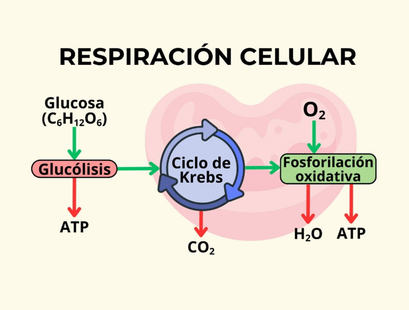
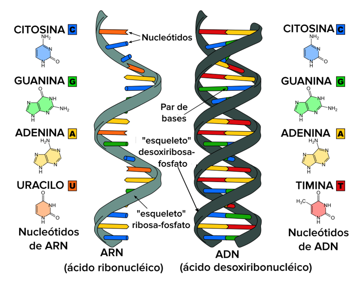
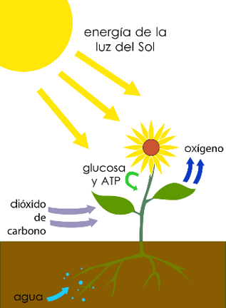
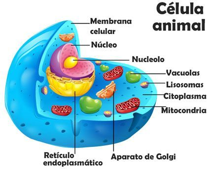
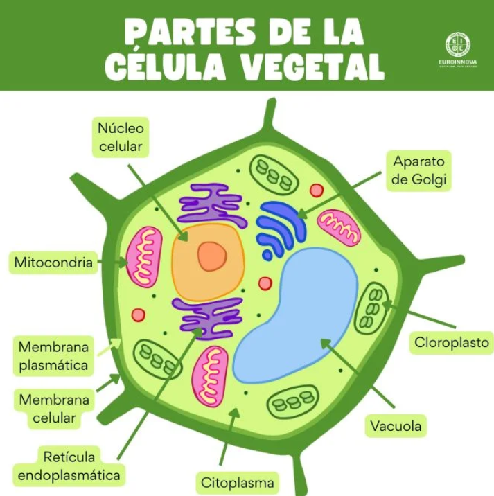

Proyecto de Biología
Respiración Celular
¿Qué es?
La respiración celular es un proceso metabólico que ocurre en las células de los seres vivos para obtener
energía a partir de nutrientes, principalmente glucosa.
¿Dónde ocurre?
Principalmente en las mitocondrias de las células eucariotas. En organismos procariotas, ocurre en el citoplasma
y membrana celular.
Tipos de Respiración Celular
Aerobica (con oxigeno)
• Utiliza oxígeno como aceptor final de electrones.
• Más eficiente: produce hasta 36-38 ATP por molécula de glucosa.
• Fórmula general:
C₆H₁₂O₆ + 6O₂ → 6CO₂ + 6H₂O + Energía (ATP)
Anaeróbica (sin oxígeno)
• Utiliza otros compuestos (como nitratos o sulfatos) o produce etanol o ácido láctico.
• Mucho menos eficiente: solo produce 2 ATP.
Etapas de la Respiración Celular Aeróbica
Glucólisis (citoplasma):
• Rompe la glucosa en 2 moléculas de piruvato.
• Produce 2 ATP y 2 NADH.
Ciclo de Krebs (o Ciclo del Ácido Cítrico):
• Ocurre en la matriz mitocondrial.
• Descompone piruvato, libera CO₂.
• Produce NADH, FADH₂ y 2 ATP.
Cadena de Transporte de Electrones:
• Ocurre en la membrana interna mitocondrial.
• Usa NADH y FADH₂ para generar gradiente de protones.
• Produce hasta 34 ATP mediante quimiosmosis (ATP sintasa).
Importancia de la Respiración Celular
• Provee energía (ATP) para funciones celulares: contracción muscular, transporte activo, síntesis de proteínas, etc.
• Fundamental para el metabolismo energético de organismos aerobios.
• Su eficiencia permite la vida compleja.
Los reinos de la vida
La clasificación de los seres vivos en reinos es una forma de organizar la enorme diversidad biológica del planeta. Esta clasificación permite estudiar a los organismos de acuerdo con sus características comunes como el tipo de célula, la forma de nutrición, el número de células, la forma de reproducción y la complejidad de su estructura. A lo largo de la historia, esta clasificación ha evolucionado desde un sistema simple de dos reinos (plantas y animales), hasta el modelo actual basado en tres dominios y seis reinos ampliamente aceptado en la biología moderna.

ADN y ARN
El ADN (ácido desoxirribonucleico) y el ARN (ácido ribonucleico) son las moléculas que contienen la información genética de los seres vivos. Son esenciales para la herencia, reproducción celular y síntesis de proteínas.
¿Qué es el ADN?
El ADN es una molécula que se encuentra principalmente en el núcleo de las células. Tiene forma de una doble hélice y está formada por nucleótidos, que contienen un grupo fosfato, una azúcar llamada desoxirribosa y una base nitrogenada (adenina, timina, guanina o citosina). Su función principal es almacenar toda la información genética necesaria para el funcionamiento y desarrollo del organismo. Cuando una célula se divide, el ADN se duplica para que las nuevas células tengan la misma información
¿Qué es el ARN?
El ARN es una molécula similar al ADN, pero de una sola cadena. Su azúcar es la ribosa y sus bases nitrogenadas son adenina, guanina, citosina y uracilo (en lugar de timina). El ARN se encuentra tanto en el núcleo como en el citoplasma y cumple varias funciones, principalmente llevar la información genética del ADN hacia los ribosomas, donde se fabrican las proteínas. Existen varios tipos de ARN, como el mensajero (ARNm), el ribosómico (ARNr) y el de transferencia (ARNt)
Fotosíntesis
La fotosíntesis es un proceso biológico fundamental que realizan las plantas, las algas y algunas bacterias para producir su propio alimento. A través de este proceso, transforman la energía solar en energía química, lo que permite la vida en la Tierra al generar oxígeno y compuestos orgánicos como la glucosa.
¿En qué consiste la fotosíntesis?
La fotosíntesis ocurre principalmente en las hojas de las plantas, dentro de unas estructuras celulares llamadas
cloroplastos, que contienen clorofila, un pigmento verde que capta la luz solar. Durante la fotosíntesis, las
plantas toman dióxido de carbono (CO₂) del aire, agua (H₂O) del suelo, y con la energía del sol producen glucosa
(C₆H₁₂O₆) y oxígeno (O₂).
Ecuación: 6CO₂ + 6H₂O + luz → C₆H₁₂O₆ + 6O₂
Etapas de la fotosíntesis
Fase Luminosa
Ocurre en las membranas de los tilacoides, donde la luz solar se convierte en energía química (ATP y NADPH). En esta etapa se libera oxígeno como producto.
Fase oscura o Ciclo de Calvin:
Se realiza en el estroma del cloroplasto y no necesita luz directa. Usa el ATP y el NADPH para transformar el dióxido de carbono en glucosa.
Importancia de la fotosíntesis
La fotosíntesis es esencial porque produce el oxígeno que respiramos y es la base de las cadenas alimenticias. Además, reduce el CO₂ de la atmósfera, ayudando a regular el clima. Gracias a la fotosíntesis, los seres vivos autótrofos pueden generar materia orgánica a partir de compuestos inorgánicos.
Conclusión:
La fotosíntesis es uno de los procesos más importantes de la naturaleza. Sin ella, no existiría la vida tal como la conocemos, ya que proporciona oxígeno, alimento y energía a la mayoría de los seres vivos del planeta.
Fases y tipos de metabolismo
El metabolismo es el conjunto de todas las reacciones químicas que ocurren en el interior de una célula o de un organismo para mantenerlo vivo. Estas reacciones permiten transformar los nutrientes en energía y en sustancias necesarias para crecer, reparar tejidos y realizar funciones vitales.
Fases del metabolismo
Anabolismo
Es la fase de construcción. En este proceso, el organismo utiliza energía para formar moléculas grandes y complejas a partir de otras más pequeñas. Ejemplos de anabolismo son la síntesis de proteínas, la formación de tejidos o la replicación del ADN.
Catabolismo
Es la fase de degradación. Aquí, las moléculas grandes se rompen en otras más pequeñas, liberando energía que la célula puede usar. Un ejemplo muy claro es la respiración celular, donde la glucosa se descompone para producir ATP, la energía celular.
Tipos de metabolismo según el organismo
Autótrofos
Fabrican su propio alimento a partir de sustancias inorgánicas. Por ejemplo, las plantas realizan fotosíntesis para convertir la luz solar en energía química.
Heterótrofos
Obtienen su energía consumiendo otros organismos. Esto incluye a los animales, los hongos y muchas bacterias. Realizan respiración celular o fermentación para aprovechar los nutrientes.
Conclusión:
El metabolismo es esencial para la vida, ya que permite obtener energía y construir las estructuras necesarias para el funcionamiento del cuerpo. Comprender sus fases y tipos nos ayuda a entender cómo viven y se desarrollan los seres vivos.
Célula animal
La célula animal es la unidad estructural y funcional básica de los organismos del reino Animalia. Todas las funciones vitales del cuerpo, como el crecimiento, la reproducción, el transporte de sustancias y la obtención de energía, ocurren dentro de estas células. A diferencia de las células vegetales, las células animales no tienen pared celular ni cloroplastos, lo que les da mayor flexibilidad en forma y función.

Características generales
Las células animales son eucariotas, lo que significa que poseen un núcleo definido y organelos membranosos especializados que realizan distintas funciones. Su forma puede variar mucho dependiendo del tipo de célula (muscular, nerviosa, sanguínea, etc.), pero todas comparten una estructura básica.
Organelos principales de la célula animal
Membrana plasmática
Es una capa que rodea la célula, regula el paso de sustancias y permite la comunicación con el exterior.
Núcleo
Contiene el ADN y controla todas las actividades celulares. Dentro se encuentra el nucléolo, donde se fabrican los ribosomas.
Citoplasma
Es el líquido gelatinoso donde flotan los orgánulos y ocurren muchas reacciones químicas.
Mitocondrias
Conocidas como las "centrales energéticas" de la célula, producen ATP a través de la respiración celular.
Ribosomas
Fabrican proteínas a partir de la información genética.
Retículo endoplasmático (RE)
Puede ser liso (produce lípidos) o rugoso (con ribosomas, fabrica proteínas).
Aparato de Golgi
Modifica, empaca y transporta proteínas y otras moléculas.
Lisosomas
Contienen enzimas que degradan sustancias o desechos celulares.
Centrosoma y centriolos
Ayudan en la organización del huso mitótico durante la división celular.
Conclusión:
La célula animal es una estructura compleja y altamente organizada que permite la
existencia de la vida animal. Cada uno de sus orgánulos cumple funciones específicas que, en conjunto, mantienen
a la célula y al organismo en funcionamiento.
Célula vegetal
La célula vegetal es la unidad básica de los organismos del reino Plantea. Es una célula eucariota, con características específicas que la diferencian de la célula animal, y que le permiten realizar funciones como la fotosíntesis y el soporte estructural.

Características generales
La célula vegetal tiene una estructura rígida gracias a la pared celular, que está formada principalmente por celulosa. Además, contiene cloroplastos, donde se lleva a cabo la fotosíntesis, y una gran vacuola central que ayuda a mantener la turgencia y almacena agua y nutrientes.
Organelos principales de la célula vegetal
Pared celular
Capa rígida que protege y da forma a la célula.
Membrana plasmática
Controla el paso de sustancias hacia el interior y exterior.
Núcleo
Contiene el material genético y controla las actividades celulares.
Cloroplastos
Orgánulos con clorofila donde ocurre la fotosíntesis.
Vacuola central
Almacena agua, nutrientes y desechos, y mantiene la presión interna.
Mitocondrias
Producen energía (ATP) mediante la respiración celular.
Ribosomas
sintetizan proteínas.
Retículo endoplasmático y aparato de Golgi
Participan en la producción y transporte de proteínas y lípidos.
Conclusión:
La célula vegetal es fundamental para los procesos vitales de las plantas, como la
fotosíntesis y el soporte estructural. Sus organelos especializados le permiten captar energía solar y
transformarla en alimento, además de mantener la estructura firme necesaria para crecer y desarrollarse.